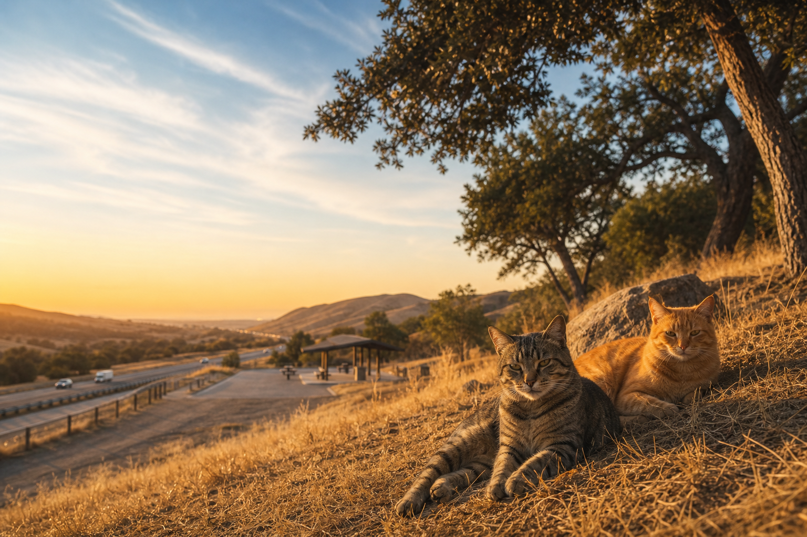
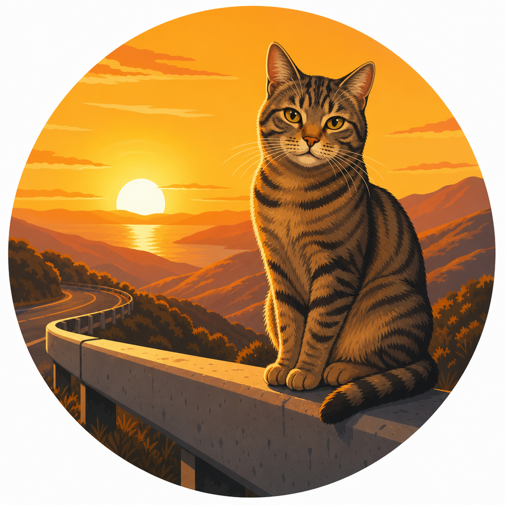

Every rest stop has a story. These cats are living it.
Feral cat colonies persist — and suffer — at highway rest stops up and down California. Roadcat Rescue is the only organization dedicated to humanely managing them through Trap-Neuter-Return.

What We Do
Three steps. Lifetimes of difference.
Trap
Using humane box traps, we safely catch feral cats in the colony — never harming or distressing them more than necessary. Every trap is monitored continuously.
Neuter
Each cat is spayed or neutered, vaccinated against rabies, and ear-tipped (a small notch that identifies them as TNR graduates). All vet care is covered by donations.
Return
Cats are returned to their home colony — the only life they've known. With reproduction halted, colony populations stabilize and humanely decline over time.
Hidden in plain sight
At rest stops up and down California's highways, feral cat colonies live in the margins. Born to cats who were born to cats, these animals have never known a home. They survive on leftovers, dodge vehicles, and reproduce without pause — a litter every few months, compounding into hundreds of cats over a decade.
Traditional shelters can't take them. Urban TNR groups don't reach them. State-managed land requires special coordination that most nonprofits don't pursue. These cats fall through every crack in the system.
Roadcat Rescue is changing that — one colony at a time.
Read Our Story
The Road Ahead
We're just getting started — and every number starts at zero until you help.
help us change that
corridors, Year 1
501(c)(3) pending
Three ways to make a difference
Whether you have $5, five hours, or five followers — there's a place for you.
Donate
Your gift funds vet care, trapping supplies, and colony management — the direct field work of TNR. A $75 donation covers one spay/neuter surgery.
Give Now
Volunteer
Join a trap team, monitor a colony, drive cats to the vet, or help with grant writing and social media outreach.
Get Involved
Spread the Word
Share our mission with friends, family, and local communities. Awareness is the first step toward action.
Contact Us
Seen cats at a rest stop?
You may have just found a colony nobody knows about. Tell us where — a rest area name or highway exit is enough. Colony reports from travelers are how our work starts.
Report a Colony
Ready to make a difference?
Your donation funds vet care and trapping supplies. Every volunteer hour saves lives.
The cats at the rest stops can't ask for help. But you can give it.